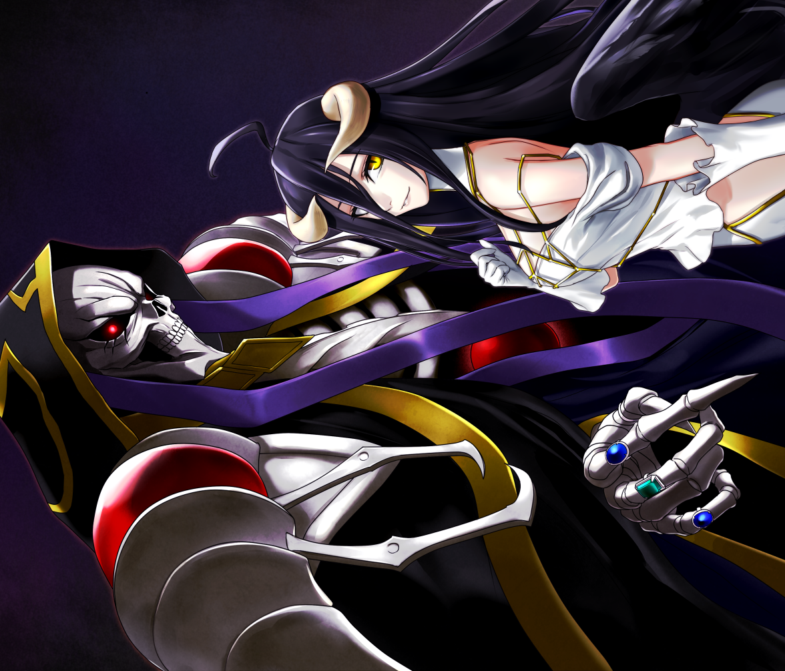

As the Overseer of the Guardians, she is in charge of managing and supervising all 7 Guardians. She also seems to have the most powerful voice (only second to Momonga – Ainz Ooal Gown of course) and she tends to openly express her opinions about matters.
He has no problem in rejecting, denouncing actions or statements which considered as inappropriate. While this shows her loyalty strongly to Nazarick and especially Ainz Ooal Gown, at certain occasions Ainz had to stop her personally. Aside from that, Albedo is an extremely intelligent figure who can calmly analyze and give ideas which Ainz probably ever thinks of.
Albedo extremely loves her lord Ainz. This is due to Ainz’s doing when he modified Albedo’s program to love him before he was transferred to the New World. She even shows high sense of jealousy towards every woman who seems to be close to Ainz.
Although she is fine with Ainz having multiple wives (since most kings are like that?), she wants to be the most loved one and she even claimed herself as “legal wife”. Bizarre indeed, but probably that’s what makes fans love about her character.
Extremely loyal and in love, Albedo is infatuated with Ainz as programmed by him, often showing obsessive tendencies when it comes to his affairs. She is always vying for Ainz's affection, showcasing outbursts of jealousy whenever anyone else appears to be getting close to him.
Yet despite this, she states that as the Supreme Ruler, it would be bizarre for him to only take one wife, implying that she would be content with him taking others as wives as long as she was the one he loves the most.
Among all the Guardians, she is the most vocal when it comes to expressing her opinions. She will openly denounce any statement or action deemed inappropriate, reaching the point where Ainz sometimes considers it an annoyance.
As the Overseer of the Floor Guardians, she is very levelheaded. Albedo can make calm and collected judgments that even Ainz, sometimes, doesn't think of. She takes Ainz's orders as a top priority and absolute, punishing anyone, even a Floor Guardian, who'd dare to belittle his orders. Like many others in Nazarick, she absolutely loathes humans and views them as an inferior species.